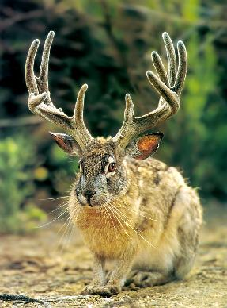
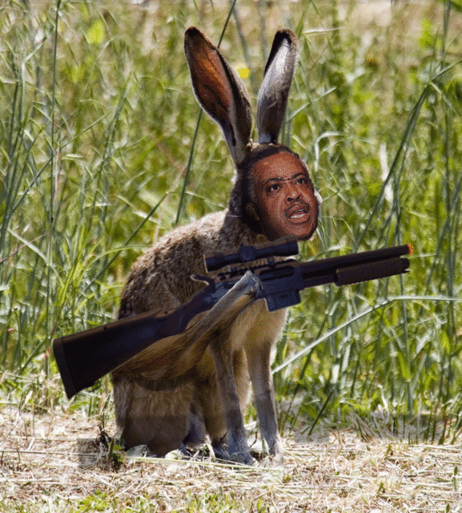
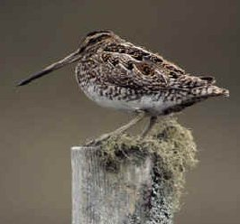

|  | The jackalope is one of hardest creatures known to man to hunt. Very few have seen a jackalope and even fewer have managed to even get a shot off at them! This makes them ideal prey for the truly elite critter hunter. The jackalope is believed to be a strange genetic hybrid of jack rabbits and antelopes. How this happened is still a mystery to scientists today. The jackalope has the strengths of both of its progenitors. It can hear humans approaching from a long distance away with its rabbit ears, and be able to disappear quickly using the speed inherited from the antelope. They are believed to live in the same general areas that jack rabbits live in, since their diet is the same. One popular jackalope hunting area is Texas, although the hunter must watch out for highway armadillos while travelling there. |
 |
A rabbit is the distant cousin of the might jackalope. They are commonly encountered while hunting jackalopes and are easier game. Any hunter going after a jackalope should ignore the rabbit as shooting at it or alarming it will alert all jackalopes and snipes in the area to your intentions. Shooting at rabbits might even provoke an armed response from the rabbits. |
|  | A picture found in a camera near the remains of a tourist. Armed rabbits should be avoided at all costs, the resulting fire fight with them will scare off the jackalopes and snipes. |
 |
Wolpertingers are one of the most deadly creatures encountered while hunting jackalopes. The wolpertinger is a hybrid of wolf, bird, antelope, and jack rabbit, but unlike the jackalope, it is extremely hostile. Monty Python and The Holy Grail made a reference to the wolpertinger when the knights came upon the cave guarded by the vicious, neck biting rabbit. This is what a wolpertinger will do if it is in an especially good mood. Unfortunately, a wolpertinger is never in an especially good mood or anywhere remotely near a sunny disposition. Many violent deaths in the wilds can be attributed to wolpertingers. Exercise extreme caution if you spot one of these vicious critters. |
|  | Snipes are small birds that live in wetlands. They are extremely elusive and rarely seen by anyone. To bag a snipe is a testament to a hunter's tracking skills. There are many species of snipe, but most are protected under endangered species law. However, the common snipe, shown to the left, is free game for any wimpy hunter unwilling to be on the wrong side of the law for the sake of the hunt. |